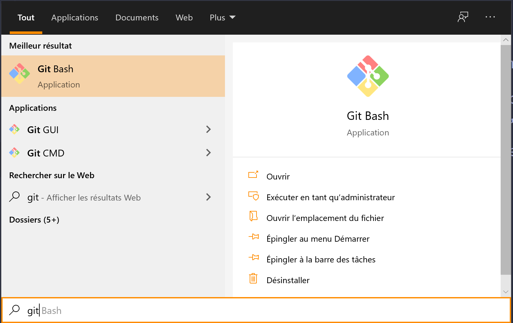

Premiers pas avec Git
Introduction
On veut écrire du code dans le but de créer un réveil interactif qui réagit au son de la voix (Siri en moins bien quoi). Au bout de quelques temps, on a un code à peu près stable qui permet de détecter l'ordre vocal "Fermes là!" pour que le réveil arrête l'alarme. A partir de ce moment là, on va généralement venir faire une sauvegarde de son travail quelque part sur son disque dur ou sur un serveur cloud. Jusque là pas de soucis. Les mois avancent et des nouvelles fonctionnalités viennent s'ajouter au code initial. Parfois on est rigoureux et on tente de faire une sauvegarde après chaque "gros changement de code" comme une nouvelle fonctionnalité, parfois on en fait pas par flemme ou par oubli.
Et le jour du drame arrive où on y a tous été confronté un nombre incalculable de fois : le BUG. Un utilisateur de notre programme nous fait la bonté de remonter un bug qu'il a rencontré en nous donnant les étapes à reproduire. Alors on commence à reproduire, on essaye de se plonger dans le code pour voir d'où vient le problème, mais on ne comprend rien de ce qu'il se passe, c'est la tristesse et là, plus le choix, on doit revenir sur les sauvegardes précédentes de notre code pour trouver enfin une version du code où le bug n'est pas reproduisible. De cette manière on peut cibler plus facilement quels ont été les changements de code. On commence alors à prendre une sauvegarde assez ancienne, à le décompresser, à le compiler, à refaire les étapes pour reproduire le bug et à tester si le bug est toujours là. On refait çà des dizaines de fois jusqu'à tomber sur la bonne sauvegarde, houra! Arf, le bonheur n'en fut qu'éphémère, les deux sauvegardes de code sont espacés de plusieurs semaines et les changements sont trop nombreux... Au final on est pas aidé plus que çà, il faut encore se replonger dans le code, comprendre ce qu'il se passe et jouer au Sherlock Holmes.
Plusieurs problèmes dans ce scénario digne d'Holywood:
- En tant que développeur, on a pour devoir de sauvegarder le plus possible l'état de son code pour en faire un historique, ce qui D'abord, il faut tout le temps penser à sauvegarder son code. Le problème vient de comment on sauvegarde son code. Ici le processus => compression => renommage => copie (upload sur serveur?) est fastidieux et ne motive pas du tout à le faire régulièrement.
- Pareil dans l'autre sens quand on veut trouver l'origine du bug. Le processus copie(download) => decompression => compilation est beaucoup trop d'énergie et on sait qu'en tant que dév, on souhaite s'économiser le plus possible. Imaginez qu'en plus ces sauvegardes sont assez volumineuses, et pire! Que ces sauvegardes sont sur un cloud ou encore PIRE! Que les anciennes sauvegardes ont été supprimées parce que çà prenait trop de place sur le disque. Bref, on le redit, mais c'est la galère!
- On ne peut pas facilement voir les changements que l'on a apporté à un ou plusieurs fichiers source. Il y a bien des logiciels comme beyond compare qui sont utiles, mais ce n'est pas super automatique, et là aussi on perd du temps.
Je n'ai même pas évoqué tous les problèmes que l'on peut avoir en travail d'équipe sans outil de versionnage. On le voit souvent lorsque des étudiants s'échangent une clé USB avec le code source dessus et qui s'engueulent parce que l'un a modifié le code de l'autre et que l'autre se retrouve avec plein de conflits et de bugs.
Bref, ce serait quand même super si quelqu'un avait une solution pour çà. Et là, il y a quelqu'un qui est arrivé et qui a fait : "Je vous ai concocté un petit outil qui va faire des merveilles! Je vous promet que çà va nous changer la vie!" (cette citation est fictive!). Celui qui a imaginé Git (Linus Torvalds, le papa de Linux entre autre) a sauvé la vie de la quasi totalité des développeurs et je vais vous expliquer pourquoi. D'ailleurs, au moment que j'écris ces lignes, j'utilise Git pour versionner mes cours, c'est très pratique!
Git, un outil de versionnage, quèsaco?
Git est un outil permettant de faire une photo "intelligente" de son travail à un instant donné et de montrer les changements réalisés entre deux photos. Prenons par exemple un fichier source qui se présente de la façon suivante :
int main(){ std::cout << "Hello world" << std::endl; return 0;}
Je souhaite prendre une photo de ce code (c'est ce qu'on appelle un commit, voir la section Réaliser son premier commit). Ensuite j'ajoute une ligne dans le fichier :
xxxxxxxxxxint main(){ std::cout << "Hello world" << std::endl; std::cout << "Hello you!" << std::endl; return 0;}
Maintenant je demande à Git de me donner la différence entre le code actuel qui n'est pas pris encore en photo et la photo la plus récente, il m'affichera :
xxxxxxxxxxdiff --git a/main.cpp b/main.cppindex 29de88e..00f7fab 100644--- a/main.cpp+++ b/main.cpp@@ -3,5 +3,6 @@int main(){std::cout << "Hello world" << std::endl;+ std::cout << "Hello you!" << std::endl;return 0;}\ No newline at end of file
On voit que la différence affichée entre les deux versions de fichiers est bien l'ajout de notre nouvelle ligne de code.
Ce qui fait aussi la base d'un outil de versionnage, c'est de pouvoir passer d'une photo à une autre sans la moindre difficulté, puisqu'une simple commande suffit (voir la fiche Balade dans les commits). Exemple sur l'image ci-dessous:
Se baser sur une ancienne photo ne veut pas non plus dire effacer les plus récentes, l'historique est conservé et revenir à la photo la plus récente est tout à fait possible.
Grâce à cet outil, investiguer un bug devient beaucoup plus efficace, il n'y a plus besoin d'aller chercher sa sauvegarde stockée sur son disque dur ou sur un service cloud, on reste dans le même dossier et on passe d'une photo à l'autre. De plus les changements sont très rapides.
On n'évoque même pas ici la plus-value énorme lorsqu'on travaille avec plusieurs personnes sur un même projet. Pour en donner un aperçu, reprenons la situation avec les deux étudiants. Si les deux avaient utilisé Git, ils auraient alors pris chacun des photos du code modifié/ajouté, pousser les photos sur un serveur comme Github et ensuite resynchroniser avec les photos de l'autre chacun de leur côté. Et cela fonctionne parfaitement bien. Il se peut que parfois il y ait des conflits de code (les deux étudiants modifient le même fichier), Git propose de résoudre les conflits en donnant la différence entre les deux fichiers changement par changement (exemple ci-dessous).Plus d'explications dans la fiche Git à plusieurs.
Créer son premier repository Git
Initialisation d'un repository (repo)
Avant toute chose, il faut installer un environnement git sur sa machine afin de pouvoir utiliser l'outil. Le lien pour télécharger l'installeur de git est le suivant : https://git-scm.com/downloads. Ensuite, on lance l'installeur de Git, on laisse les options par défault (ce qui devrait suffir) et voilà c'est fait!
Vérifions que Git est bien installé. En allant dans la barre de recherche du menu démarrer, il y a normalement un petit terminal git, appelé git bash, qui s'affiche (image ci-dessous).
On va pouvoir ouvrir Git bash et commencer nos expérimentations. D'abord, il faut se placer à la racine du dossier où l'on veut créer son repo. Pour les non habitués du terminal, il faut au moins retenir ces deux commandes :
- ls : qui permet d'afficher le contenu du dossier dans lequel on est,
- cd : qui permet de se déplacer d'un dossier à l'autre.
Voici un exemple ci-dessous de leur utilisation.
Reprenons notre dossier contenant notre fichier main.cpp. Une fois arrivé dans le bon dossier avec le terminal, on écrit la commande suivante:
xxxxxxxxxxc:\Repositories\myRepository>git initInitialized empty Git repository in C:/Repositories/myRepository/.git/
c:\Repositories\myRepository>ls -a./ ../ .git/ main.cpp
Cette commande va installer certains fichiers dans le répertoire dans un dossier très important appelé .git. Ce dossier va contenir tout l'historique des photos prises du repo. Ce n'est pas nécessaire, ici que j'en dise plus. Les questions sont les bienvenues en cours :). Parfait! On a un repo, tout est fait on a plus qu'à photoshooter.
Réaliser son premier commit
Ce que j'appelle photo ici n'est pas le bon terme, même si cela s'y prête parfaitement, puisque l'on va littéralement enregistrer tous les fichiers contenus dans le repo. Le terme officiel anglais est commit.
Pour pouvoir enregistrer les fichiers, il faut d'abord indiquer à Git qui c'est que l'on met sur la photo, c'est à dire quels fichiers on veut sauvegarder. Git ne prend pas en compte les nouveaux fichiers créés, il faut lui dire. Ce qui n'est pas plus mal, parce que parfois on ne veut pas tout prendre en photo. Par exemple, tous les fichiers de build temporaire créé par un IDE ne sont pas le bienvenue.
Pour ajouter un nouveau fichier, il faut faire la commande suivante git add [nom du fichier].
Partons d'un exemple avec un repo tout frais contenant le fichier main.cpp.
Commençons par regarder l'état du repo git avec la commande git status. L'état du repo fait références à tous les changements apportés depuis la dernière photo prise.
xxxxxxxxxxc:\Repositories\myRepository>git statusOn branch master
No commits yet
Untracked files: (use "git add <file>..." to include in what will be committed) main.cpp
nothing added to commit but untracked files present (use "git add" to track)
La sortie de la commande indique qu'un fichier nommé main.cpp n'a pas été ajouté à la liste d'enregistrement (untracked file) pour la prochaine photo.
On va donc demander à git de mettre le fichier main.cpp sur la liste pour le prochain enregistrement en utilisant la commande git add main.cpp. C'est comme si vous poussiez un élève pour qu'il rentre dans la photo de classe.
xxxxxxxxxxc:\Repositories\myRepository>git add main.cpp
c:\Repositories\myRepository>git statusOn branch master
No commits yet
Changes to be committed: (use "git rm --cached <file>..." to unstage) new file: main.cpp
On voit que le fichier main a bien été pris en compte (new file).
Il ne reste plus qu'à demander à git de prendre la photo de la liste des changements. Pour çà, on utilise la commande git commit -m"[message du commit]". Il faut remplacer [message du commit] par un message personnalisé qui décrit ce qu'il y a sur la photo, autrement ce sera refusé. Ici on a ajouté un seul fichier, donc :
xxxxxxxxxxc:\Repositories\myRepository>git commit -m"Add main.cpp"[master (root-commit) 0d10b18] Add main.cpp 1 file changed, 11 insertions(+) create mode 100644 main.cpp
c:\Repositories\myRepository>git statusOn branch masternothing to commit, working tree clean
Git nous indique qu'il a bien créé une nouvelle photo dont son petit nom est 0d10b18. On peut voir que l'état du repo après est dit "clean" parce qu'il n'y a eu aucun changement depuis la dernière photo prise, c'est à dire qu'on a apporté ni modification ni ajouter/supprimer d'autres fichiers depuis notre dernier commit.

Conclusion
Résumé de la fiche :
Un outil de versionnage tel que Git apporte :
- une gestion de backup du code optimisée
- un historique clair des changements dans le code
- un moyen de passer d'une photo à l'autre simplement (fiche "Se balader dans l'historique Git")
- un outil de coopération indispensable
Comment créer un nouveau repo Git avec la commande git init
Comment prendre des photos (réaliser des commits) avec Git avec les commandes pour
- ajouter des fichiers à la liste d'enregistrements : git add [nom du fichier]
- prendre la photo de la liste temporaire d'enregistrement des fichiers : git commit -m[contenu du message]